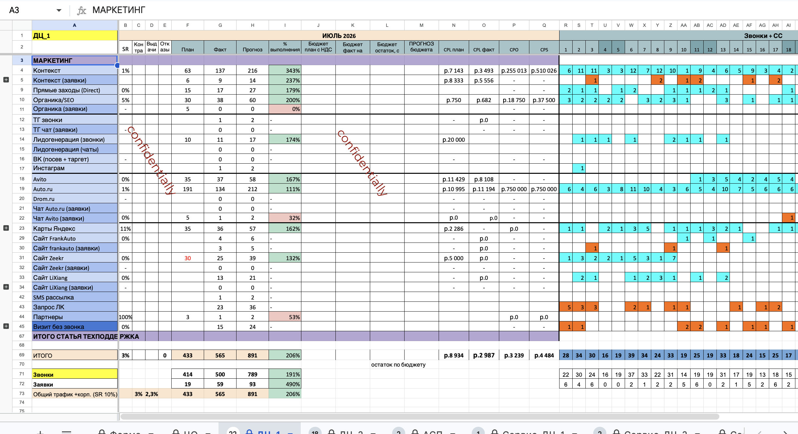
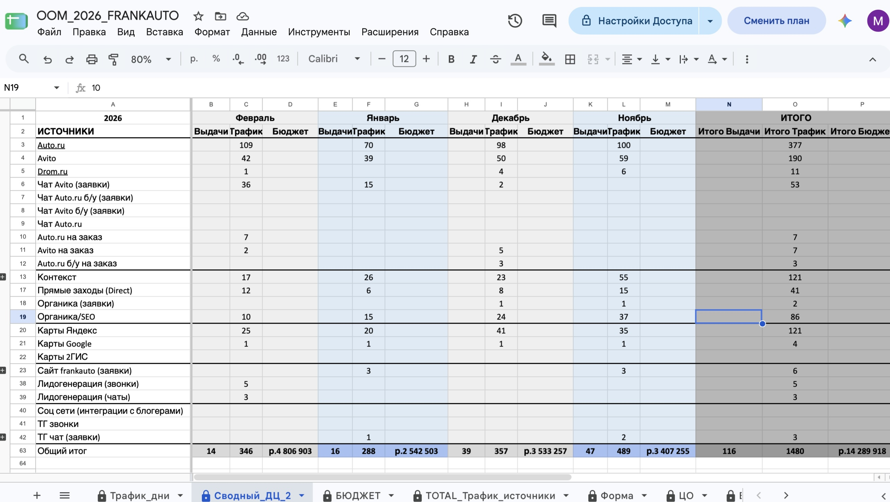
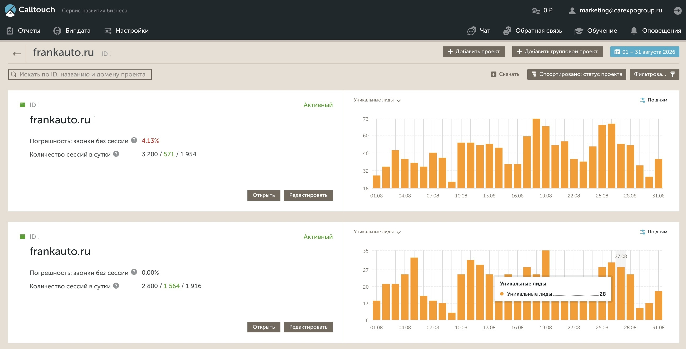
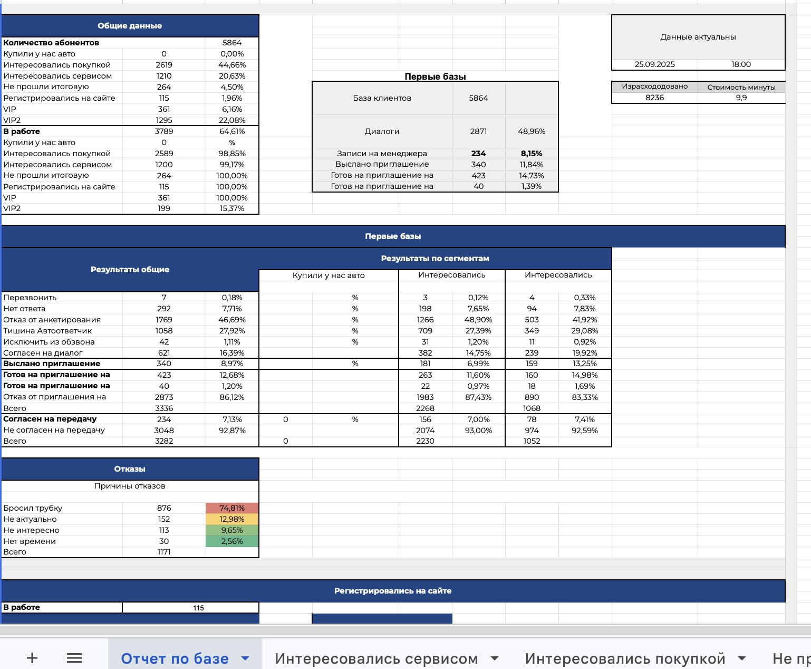

Внедрение сквозной аналитики и CRM. Связка Calltouch + Bitrix24 + Smartis позволила видеть путь клиента от первого звонка до продажи и управлять бюджетом на основе данных, а не интуиции.




| Этап | Что сделано |
|---|---|
| Аудит | Выявление потерь обращений, ручной сбор данных |
| Телефония | Внедрение Calltouch: распознавание речи, теги, контроль звонков без ответа |
| CRM | Настройка Bitrix24: обязательные поля, отказ от личных номеров, отчётность |
| Аналитика | Внедрение Smartis для сквозной аналитики и автоматизации отчётов |
| Интеграция | Связка Calltouch → Bitrix24 → Smartis → отчёты. Передача данных из 1С. |
| Результат | Прозрачная воронка, снижение CAC на 60% |
Пришла в ситуацию, когда данные по размещениям собирались вручную, источники обращений терялись, а бизнесу было сложно определить эффективные и неэффективные каналы.
Создала единый подход к сбору и анализу данных, связав маркетинг с продажами. Расширила функциональность Calltouch: распознавание речи, контроль звонков без ответа, автоматические повторные звонки, анализ качества обращений.
В Bitrix24 добавила обязательные поля и теги, сформировала отчётность по звонкам, исключила рабочие звонки с личных номеров, активировала маркетинговый блок CRM.
Инициировала внедрение Smartis для автоматизации аналитики. Выстроила контур: Calltouch → Bitrix24 → Smartis → автоматизированные отчёты. Организовала передачу данных из 1С через Bitrix24 для отслеживания выдач и контрактов.
Фрагменты рабочих таблиц показаны с водяным знаком «confidentially» в соответствии с подписанным NDA.